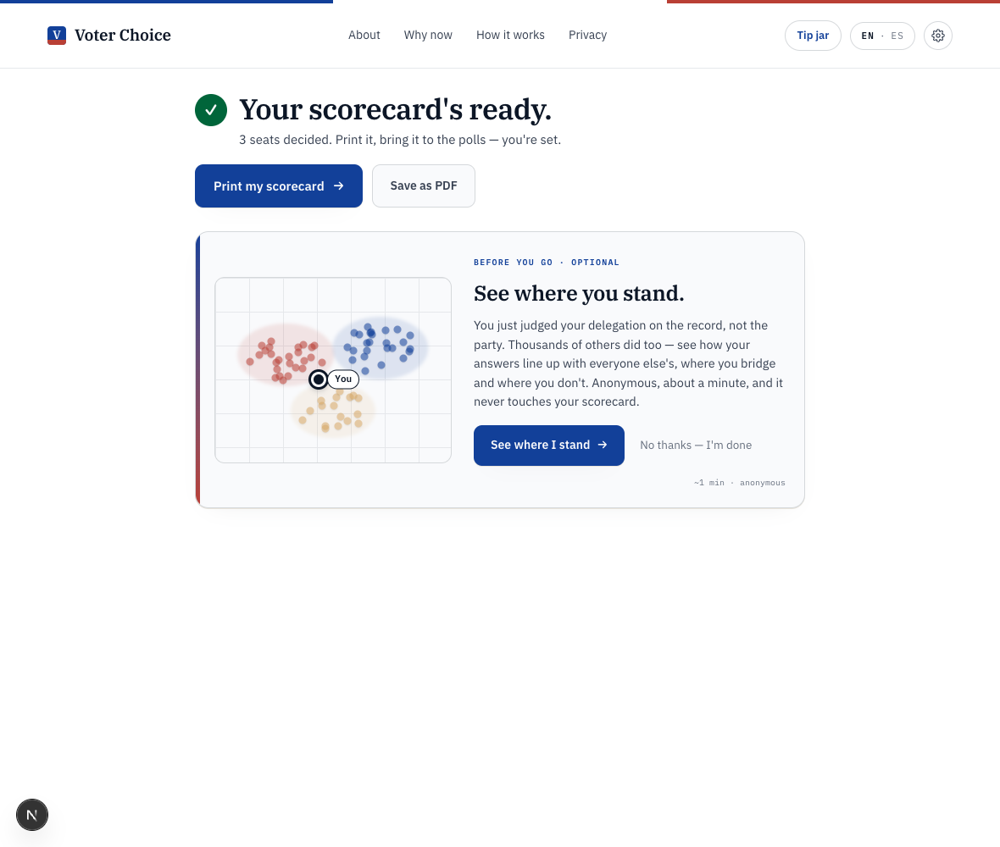
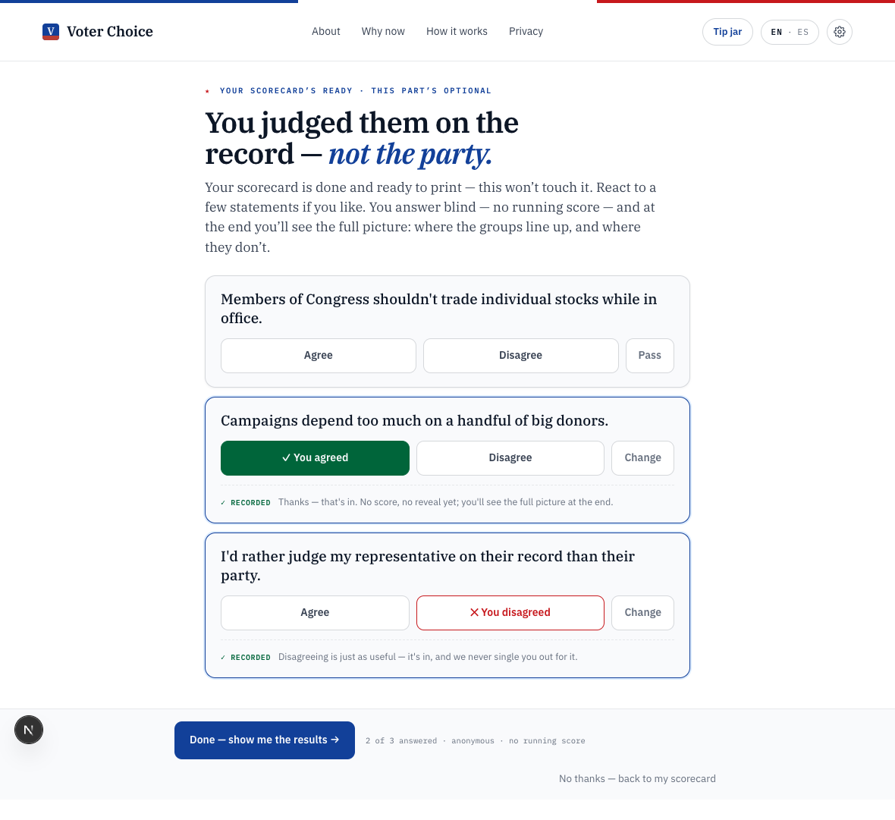
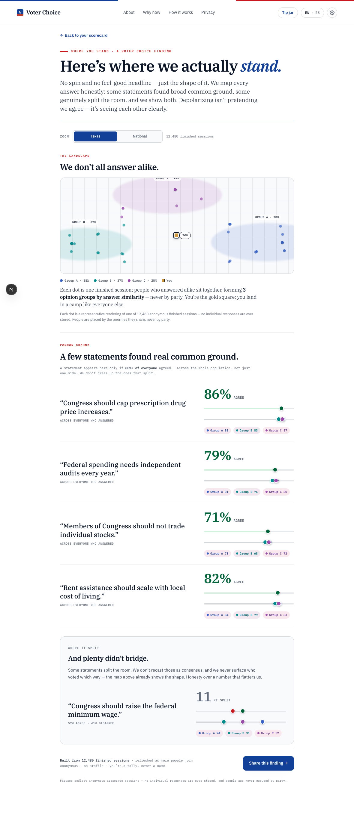
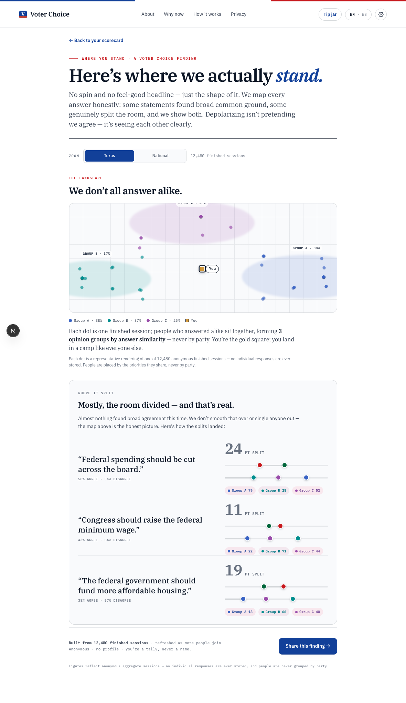

10a-polis-entry
Polis — entry point
changed since base
automated
PolisEntry.tsx (canvas's dedicated invite/preview screen, data-testid="polis-entry-see-standing") landed via PR #237 — the workspace's '.all-done … where you stand' completion link now opens this interstitial instead of jumping straight to the standing report (the false-pass this scenario used to document, STOP-SHIP 2026-07-09, is resolved: capture() reaches the real screen, not an unclicked proxy link). capture() verdicts every seat, follows that link, and stops at PolisEntry itself — one step short of goToStanding()'s final click into the real standing report. Also fixed here: PolisEntry.tsx's .pe-screen predates the app-wide Bold Flag foundation (PR #237 was built before it) and pointed its --brand/--brand-2 tokens at --civic, which .bf-app's own comment documents as deliberately LEFT untouched app-wide (it still doubles as the 'keep' green) — so PolisEntry's flagbar/buttons/invite-rail rendered civic-green instead of the canvas's navy. Repointed at --bf-brand/--bf-brand-2 (public/redesign2.css).


10b-polis-contribute
Polis — contribute (blind voting)
changed since base
automated
PolisStand (card fb77d0bb) now exists — a literal port of the canvas's polis-stand artboard (.ps-* vocabulary; unlike PolisClose this screen carries no party data to begin with, so there's no party-free conflict forcing a re-expression). Drives to PolisStand and answers the SAME two statements the canvas ref itself answers (2nd agree, 3rd disagree, 1st left unvoted) for the tightest possible visual match — the whole point is blind per-statement voting, never a fully-agreed or fully-disagreed set.


10c-polis-report-consensus
Polis — report, common-ground state
changed since base
automated
Bridges mock returns several high-agreement statements → 'Common ground' panel renders populated, plus one divided statement → 'Where it split' renders too (the realistic 'mostly consensus, some friction' mix). Both panels render real content today via computeDivided (card e2455f56, superseded the held PR #240) — see STRUCTURAL_WAIVERS in parity-gate.ts for why the residual visual diff is expected either way (DECISION #116, party-free).


10d-polis-report-divided
Polis — report, divided/no-common-ground state
changed since base
automated
PolisClose renders the true 'genuinely split' branch live (no Common ground panel, 'Where it split' populated instead) via computeDivided / DIVIDED_MIN_SHARE=30 (card e2455f56) — this superseded the held PR #240, which never merged. Bridges mock returns zero bridges + several real divided statements to exercise that branch. See STRUCTURAL_WAIVERS in parity-gate.ts for why the residual visual diff is expected either way (DECISION #116, party-free).

